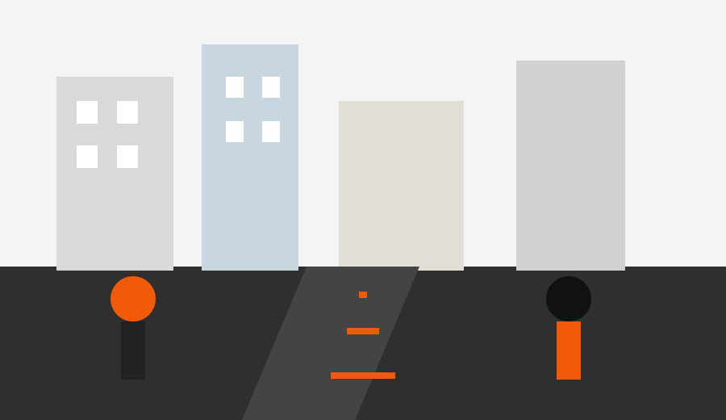

El centro suma nuevos recorridos peatonales y cambia la circulacion del transporte
El municipio presento un plan para ordenar las calles mas transitadas y mejorar el acceso a escuelas, comercios y paradas.
Leer nota completaMartes 26 de mayo de 2026
Noticias de ciudad, tecnologia y cultura

El municipio presento un plan para ordenar las calles mas transitadas y mejorar el acceso a escuelas, comercios y paradas.
Leer nota completa